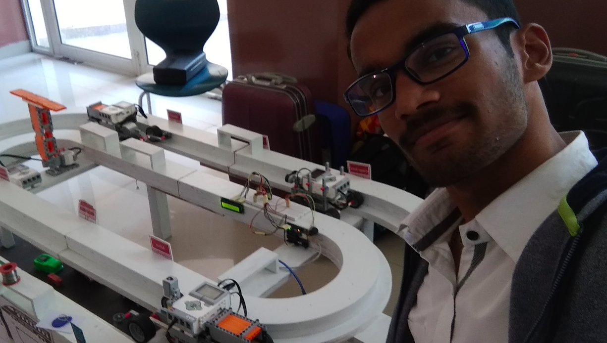
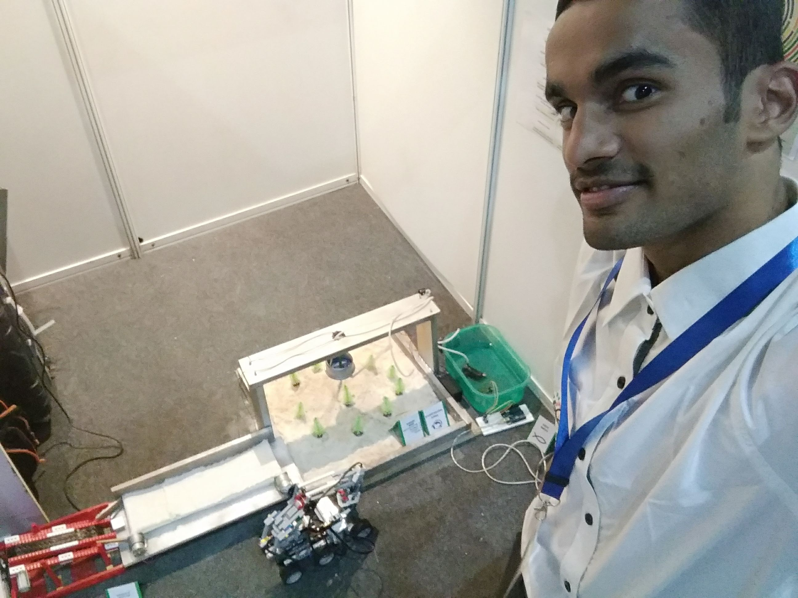

Find links at the end of the page to navigate in the website

-
CBSE National Level STEM Fair
For this competition we created a prototype of Hyperloop. We made a hyperloop pod out of lego ev3 mindstorms.
We futher created edge node devices powered by arduino which give us specific information required for the maintainance of the transport.
We integrated IOT with sensors in the pods and on the track for safe transport and intelligent collision avoidance.
-
World Robotics Olympaid
For this competition we created a prototype of aquaponics based on the full scale facility of our school.
We took the science further by integrating the system with IOT powered by arduino to measure rubricks such as soil temperature, moisture in the soil etc.
This way we are able to grow the plant and full fill its need autonomously.
-
High School Stem Fair
For this competition I created a drone and a smart rover.
The drone was to be manually controlled. While the smart rover supported both autonomous mode and manual mode.

To get back to the homepage click here